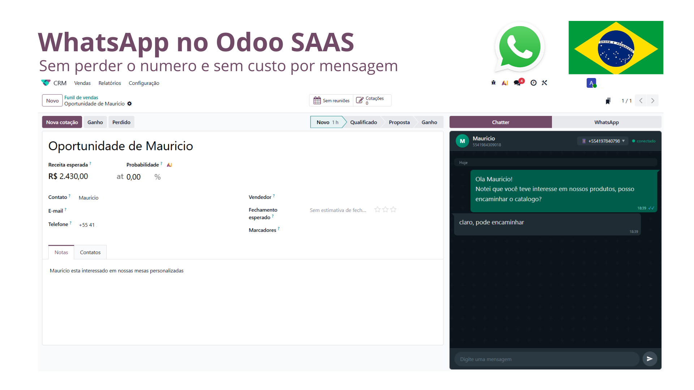

Atenda pelo WhatsApp sem sair do Odoo. Sem perder o número e sem custo por mensagem.

SaaS, Odoo.sh ou servidor próprio — a integração roda igual nos três.
Integração entregue e mantida por nós no ambiente SaaS, sem infraestrutura da sua parte.
Deploy direto no seu projeto Odoo.sh. Sem dependências Python externas, sem build extra.
Servidor próprio ou cloud de sua escolha. Basta adicionar o módulo ao addons path.
| Versão do Odoo | 19.0 (Community e Enterprise) |
|---|---|
| Hospedagem | Odoo Online (SaaS) • Odoo.sh • On-Premise |
| Dependências | crm, sale_management — sem bibliotecas Python externas |
| Custo por mensagem | Nenhum. Você usa o seu próprio número. |
Uma aba a mais no chatter. Nada de segunda tela, nada de copiar e colar.
Alterne entre o chatter padrão do Odoo e a conversa de WhatsApp com um clique, sem sair do registro.
As mensagens ficam vinculadas à oportunidade, ao cliente ou à cotação — o contexto não se perde.
Funciona direto no funil de vendas e nas cotações, sem configuração paralela por documento.
Sem migração de número, sem número virtual novo, sem perder o histórico da equipe.
Interface em português e tratamento correto de números brasileiros com e sem o nono dígito.
O acesso às conversas respeita os grupos e as regras de registro que você já usa no Odoo.
O WhatsApp é o primeiro canal. A base já foi feita para receber os próximos.
Conversas completas dentro do chatter, com envio e recebimento em tempo real.
Direct e comentários caindo no mesmo painel, junto do restante do atendimento.
Conciliação e dados financeiros ligados ao mesmo cliente, sem exportar planilha.
Um clique em Aplicativos no SaaS, no Odoo.sh ou no seu servidor. Sem dependência externa.
Aponte o número que sua equipe já usa. Sem migração e sem perder o histórico.
Abra qualquer lead ou cotação e a aba WhatsApp já está lá, com a conversa toda.
Instale o módulo e comece a atender no mesmo lugar onde o seu funil de vendas já vive.
VGR • Odoo 19.0 • Licença OPL-1